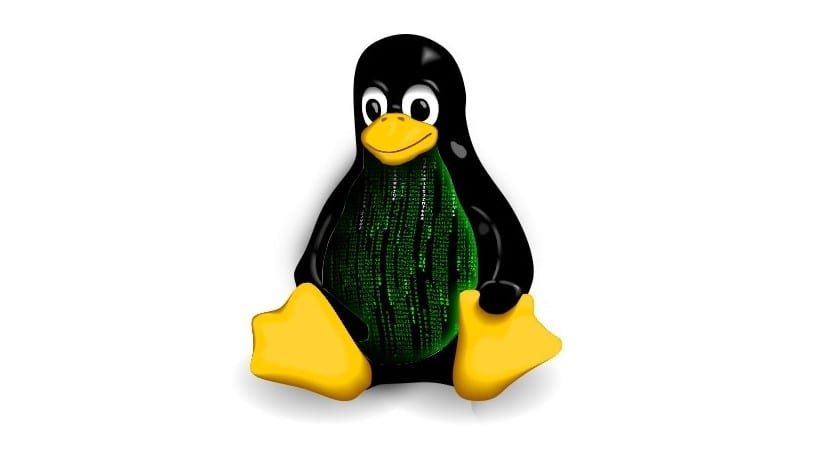

Arquitecturas de Linux

Linux es un sistema operativo de código abierto que se basa en el kernel de Linux, que es la parte central del sistema operativo encargada de interactuar directamente con el hardware de la computadora. A lo largo de los años, se han desarrollado varias arquitecturas de Linux para admitir una amplia variedad de plataformas de hardware. Algunas de las arquitecturas más comunes de Linux incluyen:
- Arquitectura x86: Esta es la arquitectura más común para las computadoras personales. Linux es compatible con una amplia variedad de procesadores x86, incluyendo Intel y AMD.
- Arquitectura x86-64 (también conocida como AMD64 o x64): Esta arquitectura es una extensión de la arquitectura x86 que admite sistemas de 64 bits. La mayoría de las computadoras modernas utilizan esta arquitectura, ya que permite aprovechar eficazmente grandes cantidades de memoria RAM.
- Arquitectura ARM: Linux es ampliamente utilizado en dispositivos móviles, sistemas embebidos y sistemas integrados, y muchas de estas plataformas utilizan procesadores ARM. Esto incluye smartphones, tabletas, dispositivos IoT (Internet de las cosas) y sistemas de navegación.
- Arquitectura PowerPC: Esta arquitectura se utiliza en computadoras Macintosh más antiguas, así como en algunos servidores y sistemas embebidos. Linux ha sido adaptado para ejecutarse en hardware PowerPC.
- Arquitectura SPARC: SPARC es una arquitectura de procesadores RISC desarrollada por Sun Microsystems. Linux ha sido portado a sistemas SPARC y se utiliza en servidores y estaciones de trabajo SPARC.
- Arquitectura MIPS: MIPS es otra arquitectura de procesadores RISC utilizada en sistemas embebidos y sistemas integrados. Linux se ejecuta en hardware MIPS, incluyendo enrutadores y consolas de videojuegos.
- Arquitectura RISC-V: RISC-V es una arquitectura de código abierto que está ganando popularidad en la comunidad de código abierto. Linux se ha adaptado para ejecutarse en hardware RISC-V y se espera que tenga un papel importante en el futuro de los sistemas embebidos y de bajo consumo energético.
- Otras arquitecturas: Linux es tan versátil que también se ha adaptado para funcionar en muchas otras arquitecturas, como Itanium, SPARC64, Alpha, entre otras.
La diversidad de arquitecturas de Linux es una de las razones de su éxito, ya que permite a los desarrolladores y usuarios ejecutar Linux en una amplia variedad de hardware, desde computadoras de escritorio hasta dispositivos embebidos y servidores de alto rendimiento. Esto ha contribuido a su adopción en una amplia gama de aplicaciones y dispositivos.